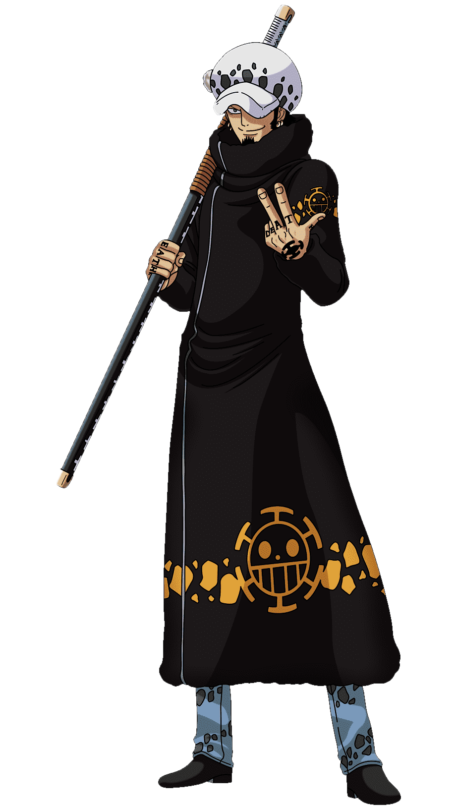

Personality

Law is a very carefree young man before the time-skip, and can be almost always seen smiling. However, he gave another pirate the finger when he called Trafalgar rude, and casually asked another how many Marines he had killed. He also enjoys watching other people fight, as he thinks that other will battle over simple things. But, he is kind to other people, as shown when he offers Jean Bart a place on his crew because of him being an escaped slave. He is also respectful of Eustass Kidd, calling him "Mister Kidd" and helping him to take on a Pacifista and later Big Mom. He is also reckless which makes him a more wanted target by the world government when in a fight. He is also blunt when comes to answering questions. When Jimbei asked what would happen to Luffy if he moved around to much when he gets to the island Law simply stated his wounds would open and he would die. He and Bepo are usually seen together and he sometimes has Bepo holding his long Japanese sword called a Nodachi.
Law has displayed a more competitive side about him in the anime where he, along with Kid and Luffy, got into a childish argument about who gets to take down the marines stationed just outside the Human Auctioning House when the three Supernovas came out to confront them. In contrast, he does not seem as eager to reach the New World as the other Supernova crews are, believing that One Piece will still be there regardless while the other crews fight among themselves, and that he needs to steal the throne "properly".
Like Kid, Law also viewed Big Mom and Kaido to be nuisances that have no place for the new era when he tries to learn and do something. He declared to Big Mom that he wished she would just go away. Before defeating Big Mom, Law declared to then-Emperor that her era is over and was annoyed by her death screechs when showing his lack of fears towards Big Mom, meaning he is immune to her "Soul Pocus".
However, Law appears to have a sense of honor (or at least respect for those he sees as potential rivals in the future), which is seen when he appears at Marineford and claims he will help Luffy, because it would be too lame if his future enemy were to die. He was also appalled when he heard that Caesar subjected the kids on Punk Hazard to drugs. This is in stark contrast to what most people seemed to think about him, since Scratchmen Apoo claimed that Law was infamous for his cruelty, and one of Smoker's men claimed he cut out the hearts of one hundred pirates and sent them to the government in order to gain the position of Shichibukai. Law has displayed a cruel side, offering to strike Tashigi yet again after already vivisecting her body in half. He also suggested to leave the kids on Punk Hazard behind, as they were too much of a burden to deal with.
Law's Devil Fruit (Op-Op Nomi)

One of the biggest talking points about Trafalgar Law is certainly his Devil Fruit ability. Law was fed the Ope Ope no Mi at a very young age and this fruit gave him the power to create large spherical ROOMs within which everything was his to control, from the terrain to the people inside it. While the Devil Fruit's basic power in itself is quite frightening, it is the awakening of the Ope Ope no Mi that makes him much more dangerous.
The Ope Ope no Mi is quite an overpowered Devil Fruit on its own. During One Piece's Punk Hazard arc, fans got to see how incredible this fruit really was when Law took on the G5 unit all by himself and ended up defeating every single one of them without even breaking a sweat. In the Dressrosa arc, his abilities were countered well by Donquixote Doflamingo, however, despite that, Law had more than a few tricks up his sleeve, such as Gamma Knife. Strangely enough, by Dressrosa, the Ope Ope no Mi hadn't awakened or Law would definitely have used its powers on Doflamingo, his worst enemy. Law waited 13 years to avenge Corazon and only relied on Luffy to take Doflamingo down as a last resort, meaning the fruit likely hadn't awakened at the moment.
♦ The Op-Op Fruit is a highly sought-after Devil Fruit, and Law's knowledge of medicine allows him to perform miraculous surgeries, cure diseases, and rearrange material within his "operating room."
♦ Trafalgar Law's Devil Fruit powers allow him to manipulate all physical matter within its range.
♦ After awakening his Devil Fruit during the Raid on Onigashima, Law's powers have grown significantly, allowing him to manipulate specific objects and individuals, pierce any object without harm, and unleash devastating attacks like Shock Wille and Puncture Wille. His Devil Fruit is one of the most powerful weapons in One Piece.